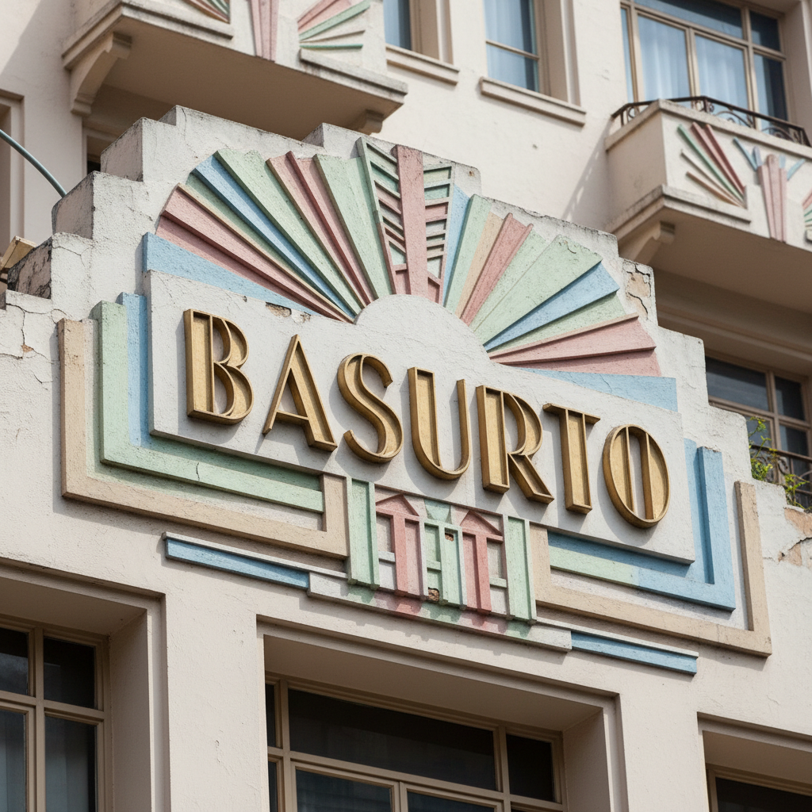

Architecture Guide 2026
Renovation & Construction: Condesa
Turnkey renovation services for Condesa. We manage the permits, the timeline, and the quality—so you don't have to.
Start ProjectLiving & Building in Condesa
Condesa feels like a village within the metropolis. The lifestyle is defined by its two parks—Parque México and Parque España. Mornings are for walking dogs on the Amsterdam oval; evenings are for mezcal on rooftop terraces. It draws a younger, artistic, and expat-heavy crowd. It is arguably the most walkable and bicycle-friendly zone in the city. The vibe is younger and more creative than Polanco. You'll see architects, designers, and writers working from terraces. The nightlife is vibrant but laid back, focused on mezcal bars, jazz clubs, and rooftop lounges rather than mega-clubs. It has a European sensibility, reminiscent of Paris or Barcelona, where life is lived on the sidewalk. The sense of community is strong here; neighbors know each other, and local businesses are cherished.
A History of Design
Condesa's unique layout comes from its past as a horse racing track (the Hipódromo) in the early 1900s. When the track closed, the oval became Amsterdam Avenue, and the area was developed with a heavy Art Deco influence. In the 1930s and 40s, it was the preferred neighborhood for the artistic middle class. After a decline in the late 20th century, it experienced a massive renaissance in the 2000s, becoming the epicenter of the city's culinary and design boom. Today, it has one of the highest concentrations of Art Deco architecture in the world, rivaling Miami Beach. This architectural heritage is fiercely protected, giving the neighborhood a timeless, cinematic quality.
The Investment Outlook
Condesa is the darling of the short-term rental market (Airbnb). Tourists love it for its walkability and 'vibes.' Consequently, per-night rates rival hotels. For long-term holding, property values have surged, but demand remains incredibly strong due to the lifestyle factor. It is less volatile than emerging zones but offers higher yields than Polanco due to the tourism factor. However, prices per square meter for renovated Art Deco units are now approaching Polanco levels, indicating its solidified status as a prime asset class.
The Condesa Cheat Sheet
- Best Streets Amsterdam, Veracruz, Mazatlán
- Hidden Gems The streets bordering San Miguel Chapultepec offer better value.
- Best Coffee Chiquitito Café (tiny, perfectionist) or Blend Station (for digital nomads).
- Dining Scene Casual, trendy, and sidewalk-focused. Endless brunch spots, wine bars, and fusion tacos.
- Local Quirks The sound of dogs barking is the neighborhood soundtrack. It is arguably the most dog-friendly zone in Latin America.
The Challenge
Strict heritage protections (INBA) on Art Deco facades make exterior modifications difficult.
Our Solution
We specialize in 'invisible' modernizations—restoring the facade perfectly while completely overhauling the interior systems.
Led by Erik Martínez (AIA, NCARB), formerly of SHoP Architects NYC, we navigate these complexities with precision.


Start Your Project
Request a feasibility assessment for Condesa.
- Talacha Studio
- Erik Martínez, AIA, NCARB
- Mexico City & New York
Explore Nearby Zones
- Architecture in Roma NorteExplore Zone →
- Architecture in PolancoExplore Zone →
- Architecture in Roma SurExplore Zone →